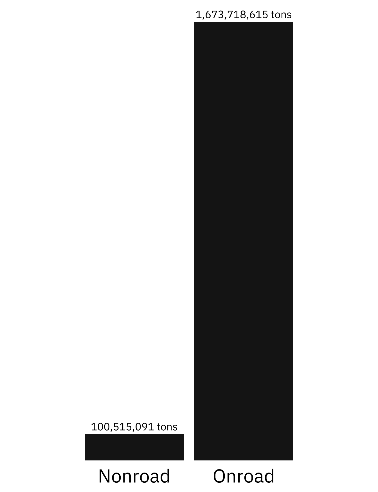
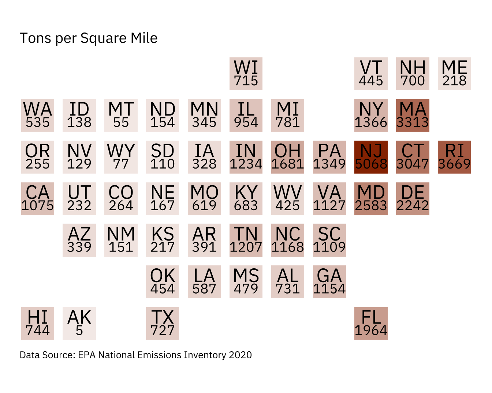

Emissions in the USA
In 2020, the United States was the second highest emitter of greenhouse gasses, globally1. Generally, emission sources are classified as either Point or Nonpoint. Point sources are emissions that can be attributed to specific places, including power plants and airports, while nonpoint sources are aggregates of emissions that cannot be traced to a single location but rather are estimated across a space.
In the Environmental Protection Agency’s (EPA) National Emissions Inventory (NEI) dataset, point sources comprise 98% of the total emissions (in tons) reported in the 2020 release2. Since it’s inherently harder to conceptualize dispersed emissions, I decided to focus on characterizing these Nonpoint sources, with specific attention paid to the Mobile sector. The mobile sector can be divided into Onroad and Nonroad categories, where onroad sources include motorized vehicles such as cars, motorcycles, trucks, and buses and nonroad sources include but are not limited to equipment from the construction, agricultural, and industrial industries3.
Design Choices
I chose three fundamental graphic forms: first, I gravitated towards the bar chart to visualize the two mobile sector categories (Onroad and Nonroad) because it allowed me to convey the relative contribution of each category towards the total Mobile sector emissions based on the lengths of each bar. I further broke these two categories down into “Diesel” and “Other” (which includes gasoline) to help visualize the fuel types of the equipment (and thus infer the type of equipment) that is responsible for these emissions. Originally, I had planned to use three separate bars as “smokestacks”, but I changed my mind because I felt that smokestacks better represented point sources better than nonpoint sources. Second, I chose two donut charts: one to show the sector breakdown of nonpoint emissions, which turned out to be 99% from the Mobile sector, and the second to give context to the Other sectors considered nonpoint sources of emissions. Finally, I determined that the best way to show the spatial allocation of emissions was to display emissions (in tons) per square mile on a stylized map of the U.S. with states shaded by tons/square mile. I chose to normalize by area (square mile) to give a better sense of how the size of states related to their emissions contributions.
Overall, I kept text to a minimum. I labeled the bars on the bar chart to distinguish between the two Mobile sector categories and annotated with the total tons of emissions for each, but I opted to use color (black and gray) to tell the story of the fuel type breakdown (and included the fuel type legend as simple text). I chose to add a title to the map to make it clear what it was showing and to include the units (tons/square mile) as a subtitle. Lastly, I didn’t annotate the donut charts because I felt that the legends already provided a lot of text and I felt that the sector names provided enough context along with the percentages.
I used theme_void() for all my base themes to make customizing the style relatively simple. I didn’t include axes on any of my graphs because they use color and size to convey the necessary information without overloading on numbers. I felt that numbers were difficult to contextualize, especially in tons, and I wanted my overall infographic to be free from the clutter of grid lines and extra axes.
I intentionally filtered color palettes for colorblind-friendly options. I pulled specific colors from “palettetown::gloom” (such as the orange for the map and the yellow for the lines on the road) to fit the overall theme of the larger infographic without being overwhelming on the color front. I think the grayscale of the “road” bar chart balances the brighter colors of the map, and I opted for a solid light gray background for contrast. I chose orange for the map since it didn’t immediately infer any connections to sectors listed in the “Other” donut chart, as the map represents total nonpoint emissions. The collection as a whole helps to convey the “doom and gloom” emotion that I am invoking with my exploration of emissions.
I chose to use a bolded IBM Plex Sans Condensed for title text and a normal IBM Plex Sans for subtext (annotations, axis labels, etc.) because it has a modern, respectable presence without being overly official. I like using the bold for the few titles and definitions that are present to draw the readers attention to the main topics of the Nonpoint Emissions infographic: emissions by Sector, the breakdown between the Nonroad vs. Onroad categories in the Mobile sector, and Emissions by State.
I chose relatively simple graphic forms as well as a simple general layout to avoid information overload. I removed most of the legends and/or opted for simple text legends where possible. I used minimal objects and turned the Onroad bar into a road to make it visually enticing yet still informative. By removing axes and non-essential graphic elements, I did my best to generally minimize the data-ink ratio.
I used one small car object to contextualize the focus on the Mobile sector as the majority sector in the donut chart. This, in combination with the “road” bar chart, further helps to place responsibility for the majority of Nonpoint emissions on the mobile sector, including cars, trucks, construction equipment, etc.
Nonpoint emissions are such that they do not have a specific fixed location. Thus, my primary message revolves around uncovering the what and the where concerning nonpoint emissions. I wanted to convey what comprises nonpoint emissions, and I felt that focusing on the Mobile sector with two of my graphic forms helped answer that question. Even though nonpoint emissions aren’t location specific, I still wanted to convey where these emissions are generally concentrated, which I did with the state map.
Emissions come from many, many sources. However, I felt that it was easier to focus on the Mobile sector since most people can relate to driving a car, taking public transportation, or even contributing to the larger network of shipping through online purchases or getting groceries. My intention was to send the message that emissions from the mobile sector could be realistically addressed rather than thinking conceptually about sources of emissions that we typically don’t see in everyday life.
You can access my code for each graph by clicking on the respective arrows below.
Code
Load Data + Packages
# -------- Load packages --------
library(tidyverse)
library(here)
library(ggwordcloud)
library(geofacet)
library(paletteer)
library(showtext)
library(patchwork)
library(janitor)
# -------- Load data --------
emissions_cleaned_non_point <- read_csv(here("posts/", "2025-03-11-nonpoint-emissions/", "data", "emissions_cleaned.csv"), show_col_types = FALSE) %>%
clean_names()
# Get "Gloom" colors
my_colors <- paletteer::paletteer_d("palettetown::gloom")
showtext_auto()
# Import Google fonts
font_add_google(name = "IBM Plex Sans Condensed", family = "ibm_condensed")
titletext <- "ibm_condensed"
font_add_google(name = "IBM Plex Sans", family = "ibm_plex")
subtext <- "ibm_plex"Bar Graph
# Emissions for mobile sector
road_data <- emissions_cleaned_non_point %>%
group_by(eis_sector) %>%
summarise(emissions_tons = sum(emissions_tons)) %>%
# Broadly define sectors
mutate(sector = case_when(
str_detect(eis_sector, "Agriculture") ~ "Agriculture",
str_detect(eis_sector, "Biogenics") ~ "Biogenics",
str_detect(eis_sector, "Bulk Gasoline") ~ "Bulk Gasoline Terminals",
str_detect(eis_sector, "Commercial Cooking") ~ "Commercial Cooking",
str_detect(eis_sector, "Dust") ~ "Dust",
str_detect(eis_sector, "Fires") ~ "Fires",
str_detect(eis_sector, "Fuel Comb") ~ "Fuel Comb",
str_detect(eis_sector, "Gas Stations") ~ "Gas Stations",
str_detect(eis_sector, "Industrial Processes") ~ "Industrial Processes",
str_detect(eis_sector, "Miscellaneous") ~ "Misc",
str_detect(eis_sector, "Mobile") ~ "Mobile",
str_detect(eis_sector, "Solvent") ~ "Solvent",
str_detect(eis_sector, "Waste Disposal") ~ "Waste Disposal"
)) %>%
# Filter for mobile sector
filter(sector == "Mobile") %>%
mutate(cleaned_sector = str_remove(eis_sector, "Mobile - ")) %>%
# Broadly define breakdown of mobile sector
mutate(cleaned_label = case_when(
str_detect(cleaned_sector, "Commercial Marine Vessels") ~ "Commercial Marine Vessels",
str_detect(cleaned_sector, "Locomotives") ~ "Locomotives",
str_detect(cleaned_sector, "Non-Road Equipment - Diesel") ~ "Nonroad: Diesel",
str_detect(cleaned_sector, "Non-Road Equipment - Gasoline") ~ "Nonroad: Gas",
str_detect(cleaned_sector, "Non-Road Equipment - Other") ~ "Nonroad: Other",
str_detect(cleaned_sector, "On-Road Diesel Heavy Duty Vehicles") ~ "Onroad: Diesel (Heavy Duty Vehicles)",
str_detect(cleaned_sector, "On-Road Diesel Light Duty Vehicles") ~ "Onroad: Diesel (Light Duty Vehicles)",
str_detect(cleaned_sector, "On-Road non-Diesel Heavy Duty Vehicles") ~ "Onroad: non-Diesel (Heavy Duty Vehicles)",
str_detect(cleaned_sector, "On-Road non-Diesel Light Duty Vehicles") ~ "Onroad: non-Diesel (Light Duty Vehicles)"
)) %>%
# Clean subsector label
mutate(cleaned_subsector = case_when(
str_detect(cleaned_sector, "Commercial Marine Vessels") ~ "Nonpoint (Other)",
str_detect(cleaned_sector, "Locomotives") ~ "Nonpoint (Other)",
str_detect(cleaned_sector, "Non-Road Equipment - Diesel") ~ "Nonroad",
str_detect(cleaned_sector, "Non-Road Equipment - Gasoline") ~ "Nonroad",
str_detect(cleaned_sector, "Non-Road Equipment - Other") ~ "Nonroad",
str_detect(cleaned_sector, "On-Road Diesel Heavy Duty Vehicles") ~ "Onroad",
str_detect(cleaned_sector, "On-Road Diesel Light Duty Vehicles") ~ "Onroad",
str_detect(cleaned_sector, "On-Road non-Diesel Heavy Duty Vehicles") ~ "Onroad",
str_detect(cleaned_sector, "On-Road non-Diesel Light Duty Vehicles") ~ "Onroad"
)) %>%
# Label fuel types
mutate(fuel_type = case_when(
str_detect(cleaned_sector, "Commercial Marine Vessels") ~ "Nonpoint",
str_detect(cleaned_sector, "Locomotives") ~ "Nonpoint",
str_detect(cleaned_sector, "Non-Road Equipment - Diesel") ~ "Diesel",
str_detect(cleaned_sector, "Non-Road Equipment - Gasoline") ~ "Other",
str_detect(cleaned_sector, "Non-Road Equipment - Other") ~ "Other",
str_detect(cleaned_sector, "On-Road Diesel Heavy Duty Vehicles") ~ "Diesel",
str_detect(cleaned_sector, "On-Road Diesel Light Duty Vehicles") ~ "Diesel",
str_detect(cleaned_sector, "On-Road non-Diesel Heavy Duty Vehicles") ~ "Other",
str_detect(cleaned_sector, "On-Road non-Diesel Light Duty Vehicles") ~ "Other"
)) %>%
# Calculate emissions
group_by(cleaned_subsector) %>%
mutate(total_emissions = sum(emissions_tons))
# Bar chart
road <- road_data %>%
filter(!cleaned_subsector == "Nonpoint (Other)") %>%
ggplot(aes(cleaned_subsector, emissions_tons, fill = fuel_type)) +
# choose "smokestack" esc color
geom_bar(stat = "identity") +
# label bars with emissions
geom_text(aes(cleaned_subsector, total_emissions, label = scales::label_comma(accuracy = 1, suffix = " t")(total_emissions)),
vjust = - 0.5,
size = 6,
family = subtext,
fontface = "bold") +
scale_fill_manual(values = c("gray40", "gray10")) +
# set base theme
theme_void() +
# adjust theme
theme(
# add x axis text back
axis.text.x = element_text(family = subtext,
face = "bold",
size = 25,
# move closer to bars
margin = margin(t = -20,
b = 10)),
aspect.ratio = 2,
legend.position = "none",
# extend plot margin at top
plot.margin = margin(t = 0,
r = 10,
l = 10,
b = 0)
)
# View
road
Map
# Convert built-in state.area to a df
state_data <- data.frame(
state = state.name,
abbrv = state.abb,
area = state.area
)
# Merge state and emissions datasets using left_join
state <- emissions_cleaned_non_point %>%
left_join(state_data, by = "state") %>%
group_by(state, abbrv, area) %>%
summarise(total_emissions = sum(emissions_tons)) %>%
mutate(rel_emissions = total_emissions/area) %>%
arrange(desc(rel_emissions)) %>%
mutate(opacity = rel_emissions/5068.261374)
# Pull specific colors from palette
core = "#F87000FF"
accent = "gray20"
# Create map
map <- ggplot(state) +
# Initiate a plot with a rectangles, shading by relative observations (opacity value)
geom_rect(aes(xmin = 0, xmax = 1, ymin = 0, ymax = 1, alpha = opacity),
fill = core) +
# Label with state abbreviation
geom_text(aes(x = 0.5, y = 0.7, label = abbrv),
size = 7,
family = subtext,
color = "black") +
# Label with observations
geom_text(aes(x = 0.5, y = 0.3, label = round(rel_emissions, 0)),
size = 5,
family = subtext,
color = "black") +
# Break rectangle up by state
geofacet::facet_geo(~state) +
# Make each rectangle the same size
coord_fixed(ratio = 1) +
# Add description line as subtitle
labs(title = "Emissions by State",
subtitle = "Tons per Square Mile",
caption = "Data Source: EPA National Emissions Inventory 2020"
) +
# Apply empty theme
theme_void() +
# Customize theme
theme(
# Remove headers
strip.text = element_blank(),
# Adjust the font and color of the title
plot.title = element_text(family = titletext,
face = "bold",
size = 20,
# hjust = 0.5,
margin = margin(t = 10,
b = 10)),
# Adjust the font and color of the title
plot.subtitle = element_text(family = subtext,
size = 15,
# hjust = 0.5,
margin = margin(b = 10)),
plot.caption = element_text(famil = subtext,
size = 10,
margin = margin(t = 10),
hjust = 0),
# Remove legend
legend.position = "none",
plot.margin = margin(b = 10, t = 10, r = 20, l = 20)
)
# View
map
Sector Donut
# Emissions by sector
sector <- emissions_cleaned_non_point %>%
group_by(eis_sector) %>%
summarise(emissions_tons = sum(emissions_tons)) %>%
# Combine subsectors
mutate(sector = case_when(
str_detect(eis_sector, "Agriculture") ~ "Agriculture",
str_detect(eis_sector, "Biogenics") ~ "Biogenics",
str_detect(eis_sector, "Bulk Gasoline") ~ "Bulk Gasoline Terminals",
str_detect(eis_sector, "Commercial Cooking") ~ "Commercial Cooking",
str_detect(eis_sector, "Dust") ~ "Dust",
str_detect(eis_sector, "Fires") ~ "Fires",
str_detect(eis_sector, "Fuel Comb") ~ "Fuel Comb",
str_detect(eis_sector, "Gas Stations") ~ "Gas Stations",
str_detect(eis_sector, "Industrial Processes") ~ "Industrial Processes",
str_detect(eis_sector, "Miscellaneous") ~ "Misc",
str_detect(eis_sector, "Mobile") ~ "Mobile",
str_detect(eis_sector, "Solvent") ~ "Solvent",
str_detect(eis_sector, "Waste Disposal") ~ "Waste Disposal"
)) %>%
mutate(plot = ifelse(sector == "Mobile", "Mobile", "Other")) %>%
group_by(plot) %>%
summarise(emissions_tons = sum(emissions_tons)) %>%
mutate(label = paste0(plot, " (", round((emissions_tons/sum(emissions_tons))*100, 0), " %)"))
# Donut chart
sector_donut <- ggplot(sector, aes(x = 2, y = emissions_tons, fill = label)) +
geom_bar(stat = "identity", width = 1) +
# Use polar coordinates
coord_polar(theta = "y", start = 0) +
# Set base theme
theme_void() +
# Create hole
xlim(0.5, 2.5) +
# Set legend
theme(
legend.position = "right",
legend.title = element_text(family = subtext,
size = 20,
face = "bold"),
legend.text = element_text(family = subtext,
size = 15),
plot.margin = margin(r = 20, l = 20)
) +
labs(fill = "Sector") +
# use gloom palette
scale_fill_paletteer_d("palettetown::gloom")
# View
sector_donutOther Sector Donut
# Emissions by sector
sector_other <- emissions_cleaned_non_point %>%
group_by(eis_sector) %>%
summarise(emissions_tons = sum(emissions_tons)) %>%
# Combine subsectors
mutate(sector = case_when(
str_detect(eis_sector, "Agriculture") ~ "Agriculture",
str_detect(eis_sector, "Biogenics") ~ "Biogenics",
str_detect(eis_sector, "Bulk Gasoline") ~ "Bulk Gasoline Terminals",
str_detect(eis_sector, "Commercial Cooking") ~ "Commercial Cooking",
str_detect(eis_sector, "Dust") ~ "Dust",
str_detect(eis_sector, "Fires") ~ "Fires",
str_detect(eis_sector, "Fuel Comb") ~ "Fuel Comb",
str_detect(eis_sector, "Gas Stations") ~ "Gas Stations",
str_detect(eis_sector, "Industrial Processes") ~ "Industrial Processes",
str_detect(eis_sector, "Miscellaneous") ~ "Misc",
str_detect(eis_sector, "Mobile") ~ "Mobile",
str_detect(eis_sector, "Solvent") ~ "Solvent",
str_detect(eis_sector, "Waste Disposal") ~ "Waste Disposal"
)) %>%
group_by(sector) %>%
summarise(emissions_tons = sum(emissions_tons)) %>%
mutate(label = paste0(sector, " (", round((emissions_tons/sum(emissions_tons))*100, 2), " %)")) %>%
filter(!sector == "Mobile")
# remove mobile sector for further analysis
other_sector <- ggplot(sector_other, aes(x = 2, y = emissions_tons, fill = label)) +
geom_bar(stat = "identity", width = 1) +
# use polar coordinates
coord_polar(theta = "y", start = 0) +
# set base theme
theme_void() +
# create hole
xlim(0.5, 2.5) +
# set legend
theme(
legend.position = "right",
legend.title = element_text(family = subtext,
size = 20,
face = "bold"),
legend.text = element_text(family = subtext,
size = 15),
plot.margin = margin(r = 20, l = 20)
) +
labs(fill = "Other") +
# use gloom palette
scale_fill_paletteer_d("palettetown::gloom")
# View
other_sectorFootnotes
To give this better context, I included an orange bar to represent 2% of the total page space on the infographic, proportional to the contribution of nonpoint emissions to total emissions.↩︎